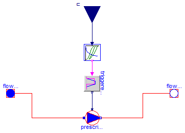

| Name | Description |
|---|---|
| Catalogo con las especificaciones de distintos circuladores | |
| Circulador | Modelo de circulador como fuente de un determinado caudal nominal |
| Ejemplos de funcionamiento de circuladores |

Modelo muy sencillo de circulador hidráulico. Basicamente es una fuente de caudal constante independiente de aspectos relacionados con el resto de la instalación.
En las especificaciones hay que indicar las características nominales (en condiciones que se consideren próximas a la que va a trabajar)
| Type | Name | Default | Description |
|---|---|---|---|
| Medium | medium | Modelica.Thermal.FluidHeatFl... | Fluido que bombea el circulador |
| Especificaciones | espec | Soltermica.Bombas.Circulador... | especificaciones del equipo |
| Temperature | T_ini | 293.15 | Temperatura inicial del equipo [K] |
| Type | Name | Description |
|---|---|---|
| FlowPort_a | flowPort_a | Aspiracion del circulador |
| FlowPort_b | flowPort_b | Descarga del circulador |
| input RealInput | u | Senal de encendido del circulador |
model Circulador
"Modelo de circulador como fuente de un determinado caudal nominal"
Modelica.Thermal.FluidHeatFlow.Sources.PrescribedVolumeFlow
prescribedVolumeFlow(
final medium=medium,
final T0=T_ini,
final m=espec.V_circ*medium.rho);
Modelica.Blocks.Logical.TriggeredTrapezoid triggeredTrapezoid(
final amplitude=espec.V_flow_nom,
rising=5,
offset=0.00000001);
Soltermica.ClasesBasicas.ControlesEquipos.Control_Circulador
control_Circulador(final pot_elec_nom=espec.Pot_elec_nom);
Modelica.Thermal.FluidHeatFlow.Interfaces.FlowPort_a flowPort_a(
final medium=medium) "Aspiracion del circulador";
Modelica.Thermal.FluidHeatFlow.Interfaces.FlowPort_b flowPort_b(
final medium=medium) "Descarga del circulador";
Modelica.Blocks.Interfaces.RealInput u "Senal de encendido del circulador";
parameter Modelica.Thermal.FluidHeatFlow.Media.Medium medium=Modelica.Thermal.FluidHeatFlow.Media.Medium()
"Fluido que bombea el circulador";
parameter Soltermica.Bombas.Circuladores.CatalogoEquipos.Especificaciones
espec = Soltermica.Bombas.Circuladores.CatalogoEquipos.Especificaciones()
"especificaciones del equipo";
parameter Modelica.SIunits.Temperature T_ini=293.15
"Temperatura inicial del equipo";
equation
connect(triggeredTrapezoid.y, prescribedVolumeFlow.VolumeFlow);
connect(control_Circulador.y, triggeredTrapezoid.u);
connect(flowPort_a, prescribedVolumeFlow.flowPort_a);
connect(prescribedVolumeFlow.flowPort_b, flowPort_b);
connect(control_Circulador.SenalEntrada, u);
end Circulador;